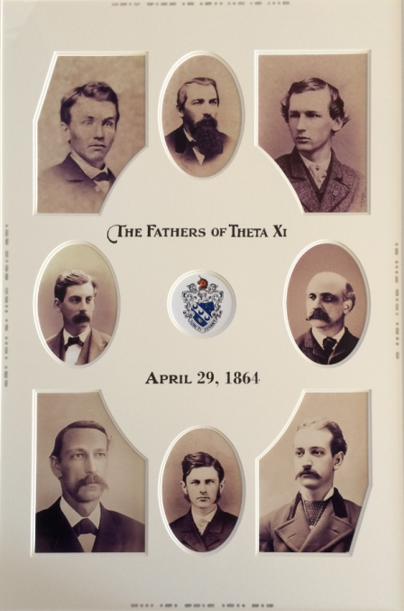

Our History
Theta Xi began in Troy, New York in 1864. Beta Zeta came to Auburn in 1954.
Rensselaer Polytechnic Institute, 1864
Theta Xi was founded at Rensselaer Polytechnic Institute in Troy, New York, on April 29, 1864, by eight members of a local society called Sigma Delta. It remains the only national fraternity founded during the Civil War.
Theta Xi has since grown to more than 50 chapters and colonies across the country. The full story is on thetaxi.org.
Read the Full History at thetaxi.org
The Beta Zeta Chapter, 1954
Beta Zeta was founded at Auburn in 1954 and has been part of the Auburn Greek community for more than seventy years.
We're known for our service, in keeping with our motto, Juncti Juvant, United They Serve. Our alumni include NASA astronaut James Voss and Lt. Gen. Ronald Burgess, former director of the Defense Intelligence Agency.
Meet Our Notable AlumniKey Dates
Theta Xi is Founded
Eight founders establish Theta Xi at Rensselaer Polytechnic Institute in Troy, New York. It is the only national fraternity founded during the Civil War.
Beta Zeta Comes to Auburn
The Beta Zeta chapter is chartered at Auburn University, beginning seven decades of brotherhood on the Plains.
A Future Astronaut Leads the Chapter
James Voss serves as chapter president. He later becomes a NASA astronaut and makes the longest spacewalk on record.
An All True Men Chapter
Beta Zeta is officially recognized by Theta Xi Headquarters as an All True Men chapter.